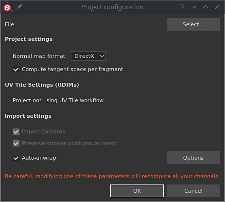
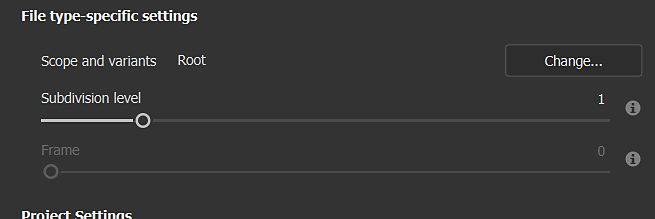

The project setting window allows to modify a few properties related to the current project, such as the reloading of a new mesh.
The File and Select button allows to update the current project's 3D model at any moment. This allows to:
If the materials changed or have been renamed when loading a new 3D model, the previous Texture Sets in the project can become disabled. This can be fixed with the Reassignment Window from the Texture Set List.
This sections control several settings related to the project:
| Setting | Description |
|---|---|
| Normal Map Format | Defines the format of the normal map used for the mesh in the viewport. Recommended value for common applications:
|
| Compute Tangent Space Per Fragment | Determines how to compute and display normal maps in the viewport for shading and lighting. Recommended value for common applications:
|
Changing the normal format or the tangent computation requires to re-bake the mesh maps to ensure that the look in the viewports is correct.
When a USD mesh format is selected, other file type-specific settings become available.

| Parameter | Description |
|---|---|
| Scope and variants | Allows to select a specific part of a USD file. By default, it is set to 'Root', which means the entire USD file will be used in the Painter project. Note that -
|
| Subdivision level | Applies to geometry that has subdivision. It allows to specify how much you would like to subdivide your mesh for texturing in Painter. If subdivision is explicitly set to 'none' within the USD file, this setting is grayed out. |
| Frame | Applies to USDs in which animation is detected. It allows you to select the frame which will be used to load a Painter project. If there is no animation in the selected USD file, this setting is grayed out. |
This section indicates if the current project is using any of the UV Tiles/UDIM texture workflow in the current project. For more information see the UV Tiles documentation.
These settings control how the selected mesh will be imported:
| Setting | Description |
|---|---|
| Import Cameras | If enabled, cameras present in the mesh file will also be imported and available in the 3D viewport as new point of view. |
| Preserve strokes positions on mesh | This setting controls how brush strokes will be recomputed after importing a new 3D mesh. It is recommended to keep this setting enabled in most cases. For more details see the UV Reprojection documentation. |
| Auto-Unwrap | Automatic UV Unwrapping. Click on the Option button to configure the process. For more information see the dedicated documentation. |
This section controls the settings regarding how to convert colors. For more information see the Color management documentation.